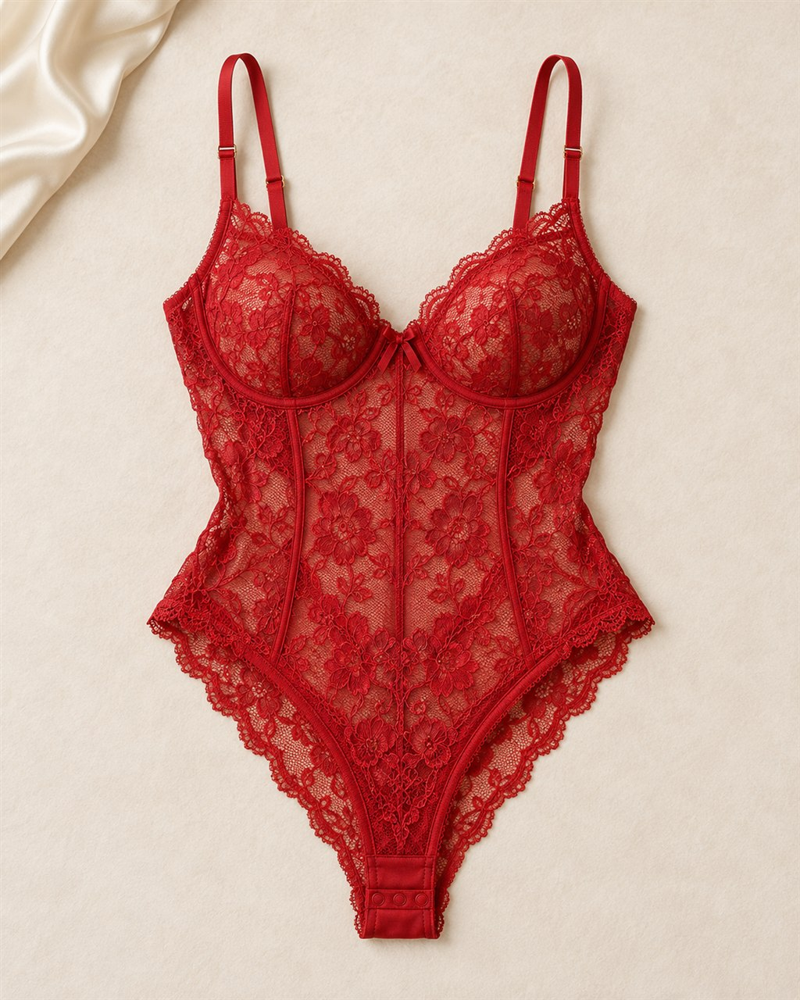
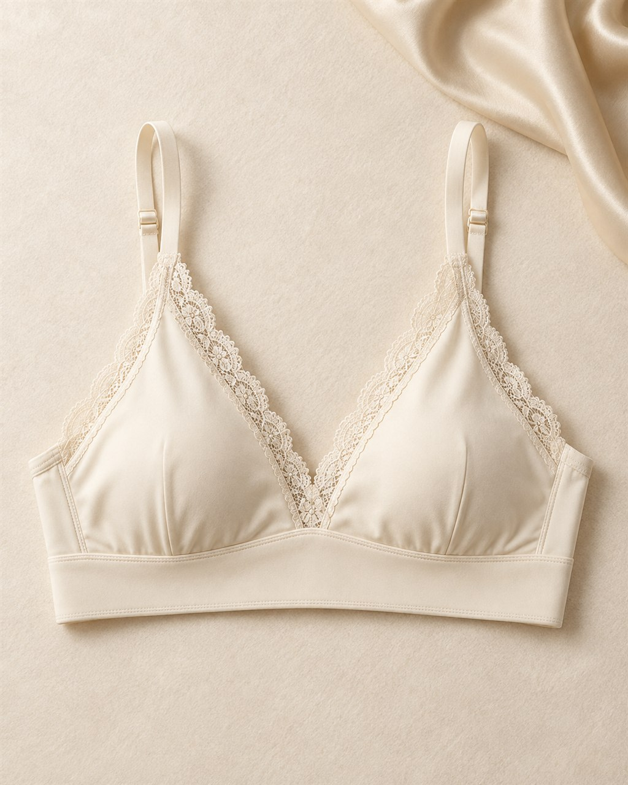
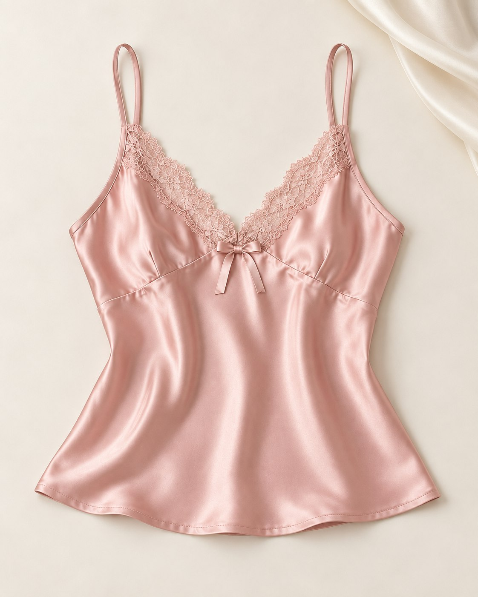
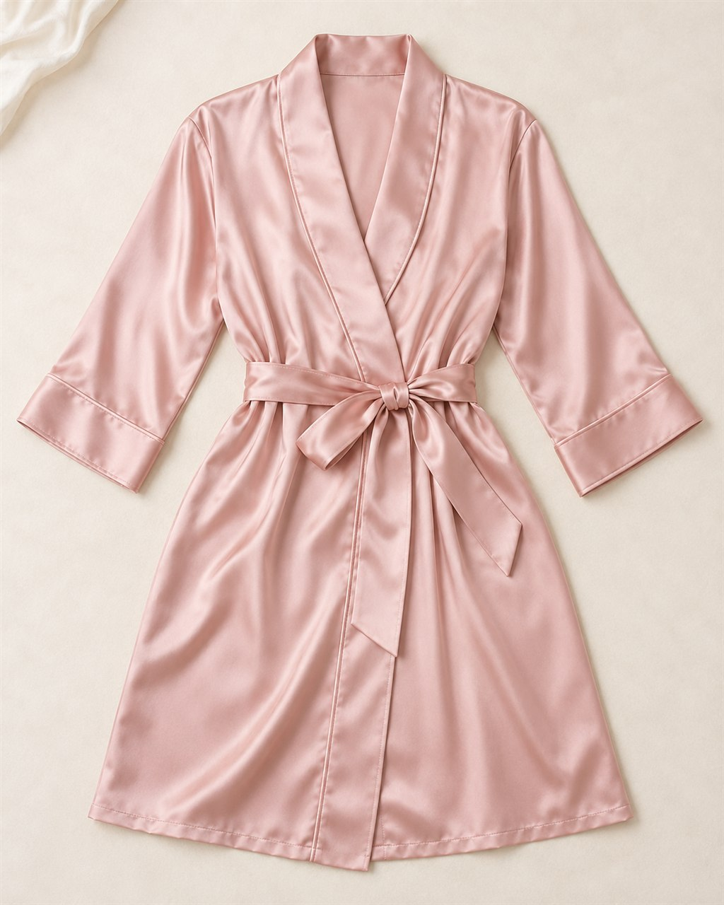
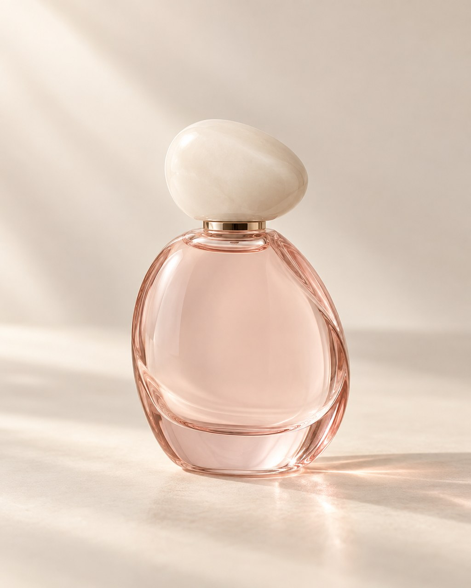

THE SIGNATURE
Cherry · Lace bodysuit
The cherry red starting point: an expressive silhouette to give the capsule its character.
Explore the conceptTHE FIRST CAPSULE · A CREATIVE PROPOSAL
The layer you reach for. A scent that feels personal. A little cherry on your lips. Six starting points for making an everyday moment yours.
Meet the six conceptsWorking title and proposed selection. Materials, formulas and fit are still to be developed and validated with physical samples. Not available for purchase.

Intimate clothing at the heart. Scent and gloss as personal finishing touches.
Cherry · Ivory · Blush01—04 · THE INTIMATE LAYERS
A bold signature, a quiet foundation and two ideas for winding down. Four clothing concepts anchor this proposed capsule.
THE SIGNATURE
The cherry red starting point: an expressive silhouette to give the capsule its character.
Explore the concept
THE EVERYDAY FOUNDATION
A quieter counterpoint to Cherry, bringing warm ivory and simple lines into the same story.
Explore the concept
THE MOMENT TO UNWIND
An idea for slowing down, with blush and a satin direction that connect intimate wear and lounge.
Explore the concept
THE LAST LAYER
A wrapping silhouette imagined alongside Lune, completing the clothing story in the same blush mood.
Explore the concept05—06 · THE FINISHING TOUCHES
Two beauty directions accompany the clothing. Personal gestures to explore, with formulas and final finishes still to be confirmed.

THE SCENT DIRECTION
A proposed floral direction that translates the capsule’s intimate mood into scent.
Explore the concept
THE COLOR ECHO
A translucent cherry color proposal, echoing the capsule’s signature red in one small gesture.
Explore the concept
ALR · ÉDITION 05
The proposed theme for our annual edition: cherry red, a deeper scent direction and a touch of gloss, brought together in a dedicated coffret.
A creative proposal awaiting samples and validation. The preview is available year-round; sales and reservations are not open.
Explore the coffret concept